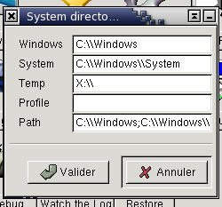

4.3. System Directories Configuration

You can set here the various environment variables for Wine :
- Windows : the directory where Windows is installed (the most
often c:\\windows)
- System : the Windows system directory (the most often
c:\\windows\\system)
- Temp : the temporary directory used by Wine
- Profile : the user profile directory (the most often
c:\\windows\\Profiles\\Administrator)
- Path : the PATH environment variable for Wine
(i.e. : c:\\windows;c:\\windows\\system)